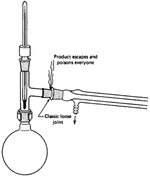
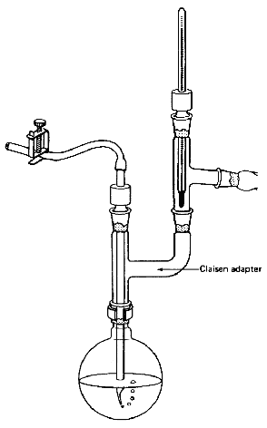
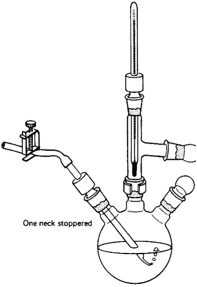

The separation or purification of liquids by vaporization and condensation is a very important step in one of our oldest professions, The word "still" lives on as a tribute to the importance of organic chemistry. There are two important points here.
- Vaporization. Turning a liquid to a
vapor.
- Condensation. Turning a vapor to a
liquid.
Remember these. They show up on quizzes. But when do I use distillation?
That is a very good question. Use the guidelines below to pick your special
situation, and turn to that section. But you should read all
the sections anyway.
- Class 1: Simple distillation.
Separating liquids boiling below 150�C at one atmosphere (1 atm) from
- Nonvolatile impurities.
- Another liquid boiling at least 25�C higher than the first. The liquids should dissolve in each other.
- Class 2: Vacuum distillation.
Separating liquids boiling above 150�C at 1 atm from
- Nonvolatile impurities.
- Another liquid boiling at least 25�C higher than the first. They should dissolve in one another.
- Class 3: Fractional distillation. Separating
liquid mixtures, soluble in each other, that boil at less than 25�C from
each other at 1 atm.
- Class 4: Steam distillation. Isolating
tars, oils, and other liquid compounds that are insoluble, or slightly
soluble, in water at all temperatures. Usually, natural products
are steam distilled. They do not have to be liquids at room temperatures.
(For example, caffeine, a solid, can be isolated from green tea.)
Remember, these are guides. If your compound boils at 150.0001�C, don't scream that you must do a vacuum distillation or both you and your product will die. I expect you
to have some judgment and to pay attention to your instructor's specific directions.
Distillation Notes
- Except for Class 4, steam distillation, two liquids that are to be separated must dissolve in each other. If they did not, they would form separable layers, which you could separate in a separatory funnel (see Chapter 15, "Extraction and Washing").
- Impurities can be either soluble or
insoluble. For example, the material that gives cheap wine
its unique bouquet is soluble in the alcohol. If you distill cheap wine,
you get clear grain alcohol separated from the "impurities," which are left
behind in the distilling flask.
Class 1: Simple Distillation
For separation of liquids boiling below 150�C at 1 atm from
- Nonvolatile impurities.
- Another liquid boiling 25�C higher than the first liquid.
They must dissolve in each other.
Sources of Heat
If one of the components boils below 70�C and you use a Bunsen burner, you
may have a hard time putting out the fire. Use a steam bath or a heating mantle.
Different distillations will require different handling (see Chapter 18, "Sources
of Heat"). All the distillations always require heating, so Chapter 18 is
really closely tied to this section. This goes for enlightenment on the use
of boiling stones and clamps as well (see
Chapter 17, "And Now-Boiling Stones" and Chapter 19, "Clamps and Clamping").
The Three-Way Adapter
If there is any one place your setup will fall apart, here it is
(Fig. 99). When you set up the jointware, it is important that you have all
the joints line up. This is tricky, since, as you push one joint
together, another pops right out. Remember,
All joints must be tight!
The Distilling Flask

Fig. 99 [Enlarge]
The "commonly-camouflaged-
until-it's-too-late" open joint
Choose a distilling flask carefully. If it's too big, you'll lose a lot of
your product. If it's too small, you might have to distill in parts. Don't
fill the distilling flask more than half full. Less than 1/3 full and
you'll probably lose product. More than 1/2 full and you'll probably have
undistilled material thrown up into the condenser (and into your previously
clean product). Fill the distilling flask with the liquid you want to distill.
You can remove the thermometer and thermometer adapter, fill the flask using
a funnel, and then put the thermometer and its adapter back in place.
If you're doing a fractional distillation with a column
(a Class 3 distillation), you should've
filled the flask before clamping the setup. (Don't ever pour your
mixture down a column. That'll contaminate everything!) You'll just have to
disassemble some of the setup, fill the flask, reassemble what you've taken
down, and pray that you haven't knocked all the other joints out of line.
Put in a boiling stone if you haven't already. These porous little rocks promote
bubbling and keep the liquid from superheating and flying out of the flask.
This flying around is called bumping. Never drop a boiling
stone into hot liquid, or you may be rewarded by having your body soaked in
the hot liquid as it foams out at you.
Make sure all the joints in your setup are tight. Start the heat
s-l-o-w-l-y until gentle boiling beg-ins and liquid starts to drop into the
receiving flask at the rate of about 10 drops per minute. This is important.
If nothing comes over, you're not distilling, but merely wasting time. You
may have to turn up the heat to keep material coming over.
The Thermometer Adapter
Read all about it. Ways of having fun with thermometer adapters have been detailed (see text accompanying Figs. 22-26 in Chapter 4, "Jointware").
The Ubiquitous Clamp
A word about clamps. Use! They can save you $68.25 in busted glassware
(see Chapter 19, "Clamps and Clamping").
The Thermometer
Make sure the entire thermometer bulb is below the side arm of the three-way
adapter. If you don't have liquid droplets condensing on the thermometer
bulb, the temperature you read is nonsense. Keep a record of the temperature
of the liquid or liquids that are distilling. It's a check on the purity.
Liquid collected over a 2�C range is fairly pure. Note the similarity of this
range with that of the melting point of a pure compound (see Chapter
12, "The Melting Point Experiment").
The Condenser
Always keep cold water running through the condenser, enough so that at
least the lower half is cold to the touch, Remember that water should
go in the bottom and out of the top (Fig. 98). Also, the water pressure
in the lab may change from time to time and usually goes up at night, since
little water is used then. So, if you are going to let condenser cooling water
run overnight, tie the tubing on at the condenser and the water faucet with
wire or something. And if you don't want to flood out the lab, see that the
outlet hose can't flop out of the sink.
The Vacuum Adapter
It is important that the tubing connector remain open to the air;
otherwise, the entire apparatus will, quite simply, explode.
Warning:
Do not just stick the vacuum adapter on the end of the condenser and hope that it will not fall off and break.
This is foolish. I have no sympathy for anyone who will not use clamps to save their own breakage fee. They deserve to pay.
The Receiving Flask
The receiving flask should be large enough to collect what you want. You may need several, and they may have to be changed during the distillation. Standard practice is
to have one flask ready for what you are going to throw away and others ready to save the stuff you want to save.
The Ice Bath
Why everyone insists on loading up a bucket with ice and trying to force
a flask into this mess, I'll never know. How much cooling do you think you're
going to get with just a few small areas of the flask barely touching ice?
Get a suitable receptacle-a large beaker, enameled pan, or whatever. It
should not leak. Put it under the flask. Put some water in it. Now
add ice. Stir. Serves four.
Ice bath really means ice-water bath.
The Distillation Example
Say you place 50 mL of liquid A (bp. 50�C) and 50 mL of liquid B (bp 100�C)
in a 250 mL R.B. flask. You drop in a boiling stone, fit the flask in a distillation
setup, and turn on the heat. Bubbling starts, and soon droplets form on the
thermometer bulb. The temperature shoots up from room temperature to about
35�C, and a liquid condenses and drips into the receiver. That's bad.
The temperature should be close to 50�C. This low-boiling material is the
forerun of a distillation, and you won't want to keep it.
Keep letting liquid come over until the temperature stabilizes at about 49�C. Quick! Change receiving flasks now!
The new receiving flask is on the vacuum adapter, and the temperature is about 49�C. Good. Liquid comes over, and you heat to get a rate of about 10 drops per minute
collected in the receiver. As you distill, the temperature slowly increases to maybe 51�C and then starts moving up rapidly.
Here you stop the distillation and change the receiver. Now in one receiver
you have a pure liquid, bp. 49-51�C. Note this boiling range.
It is just as good a test of purity as a melting point is for solids (see
Chapter 12, "The Melting Point Experiment").
Always report a boiling point for liquids as routinely as you report melting
points for solids. The boiling point is actually a boiling range
and should be reported as such:
"bp. 49-51�C"
If you now put on a new receiver, and start heating again, you may discover more material coining over at 50�C! Find that strange? Not so. All it means is that you were
distilling too rapidly and some of the low-boiling material was left behind, It is very difficult to avoid this situation, Sometimes it is best to ignore it, unless a
yield is very important. You can combine this "new" 50�C fraction with the other good fraction. For liquid B, boiling at 100�C, merely substitute some different boiling
points and go over the same story.
The Distillation Mistake
OK, you set all this stuff up to do a distillation. Everything's going fine. Clamps in the right place. No arthritic joints, even the vacuum adapter is clamped on, and
the thermometer is at the right height. There's a bright golden haze on the meadow, and everything's going your way. So, you begin to boil the liquid. You even remembered
the boiling stone, Boiling starts slowly, then more rapidly. You think, "This is it!" Read that temperature, now. Into the notebook: "The mixture started boiling at 26�C."
And you are dead wrong. What happened? Just ask-
Is there liquid condensing on the thermometer bulb?? No!
So, congratulations, you've just recorded the room temperature. There are days when over half of the class will report distillation temperatures as "Hey I see it start
boiling now" temperatures. Don't participate. Just keep watching as the liquid boils. Soon, droplets will condense on the thermometer bulb. The temperature will go up
quickly, and then stabilize. Now read the temperature. That's the boiling point. But wait! It's not a distillation temperature until that first drop of liquid falls into
the receiving flask.
Class 2: Vacuum Distillation
For separation of liquids boiling above 150�C at 1 atm from
- Nonvolatile impurities.
- Another liquid boiling 25�C higher than the first liquid.
They must dissolve in each other. This is like the simple
distillation with the changes shown (Fig. 100).
Why vacuum distill? If the substances boil at high temperatures at 1 atm,
they may decompose when heated. Putting a vacuum over the liquid makes the
liquid boil at a lower temperature. With the pressure reduced, there are fewer
molecules in the way of the liquid you are distilling. Since the molecules
require less energy to leave the surface of the liquid, you can distill
at a lower temperature, and your compound doesn't decompose.
Pressure Measurement
If you want to measure the pressure in your vacuum distillation setup, you'll
need a closed-end manometer, There are a few different types,
but they all work essentially the same way. I've chosen a "stick" type (Fig. 101).
This particular model needs help from a short length of rubber tubing
and a glass T to get connected to the vacuum distillation setup.
- Turn on the source of vacuum and wait a bit for the system to stabilize.
- Turn the knob on the manometer so that the notch in the joint lines up with the inlet.
- Wait for the mercury in the manometer to stop falling.
- Read the difference between the inner and outer
levels of mercury. This is the system pressure, literally in millimeters
of mercury (mmHg), which we now call torr.
- Turn the knob on the manometer to disconnect it from the inlet. Don't leave the manometer permanently connected. Vapors from your distillation, water vapor from the aspirator, and so on, may contaminate the mercury.
Manometer Hints
- Mercury is toxic, the vapor from mercury is toxic, mercury spilled breaks into tiny globules that evaporate easily and are toxic, it'll alloy with your jewelry, and so
on. Be very careful not to expose yourself (or anyone else) to mercury.
- If the mercury level in the inner tube goes
lower than that of the outer tube, it does not mean that you have
a negative vacuum. Some air or other vapor has gotten into the inner stick,
and with the vacuum applied, the vapor expands and drives the mercury in
the inner tube lower than that in the outer tube. This manometer is unreliable,
and you should seek a replacement.
- If a rubber tube connected to the vacuum source and the
system (or manometer) collapses, you've had it. The system is no
longer connected to the vacuum source, and as air from the bleed tube or
vapor from the liquid you're distilling fills your distillation setup, the
pressure in the system goes up. Occasionally, test the vacuum hoses, and
if they collapse under vacuum, replace them with sturdier hoses that can
take it. You can test the tubing by connecting one end to the water aspirator,
pinching the other end closed, and turning the water on so that it comes
through the water aspirator full blast. If the tubing collapses now, it'll
collapse during the vacuum distillation.
Leaks
Suppose, by luck of the draw, you've had to prepare and purify 1-octanol
(bp. 195�C). You know that, if you simply distill 1-octanol, you run the risk
of having it decompose, so you set up a vacuum distillation. You hook your
setup to a water aspirator and water trap, and you attach a closed-end "stick"
manometer. You turn the water for the aspirator on full blast and open the
stick manometer. After a few minutes, nothing seems to be happening. You pinch
the tubing going to the vacuum distillation setup (but not to the manometer),
closing the setup off from the source of vacuum. Suddenly, the mercury in
the manometer starts to drop. You release the tube going to the vacuum
distillation setup, and the mercury jumps to the upper limit. You have air
leaks in your vacuum distillation setup.
Air leaks can be difficult to find. At best, you push some of the joints together again and the system seals itself. At worst, you have to take apart all the joints and
regrease every one. Sometimes you've forgotten to grease all the joints. Often a joint has been etched to the point that it cannot seal under vacuum, when it is perfectly
fine for other applications.
Pressure and Temperature Corrections
You've found all the leaks, and the pressure in your vacuum distillation setup is, say, 25 torr. Now you need to know the boiling point of your compound, 1-octanol, this
time at 25 torr, and not 760 torr. You realize it'll boil at a lower temperature, but just how low? The handy nomographs can help you estimate the new boiling point.
This time you have the boiling point at 760 torr (195�C) and the pressure you are working at (25 torr). Using Fig. 102a, you
- Find the boiling point at 760 torr (195�C) on line B
(the middle one).
- Find the pressure you'll be working at (25 torr) on
line C (the one on the far right). You'll have to estimate
this point.
- Using a straightedge, line up these two points and see
where the straightedge cuts the observed boiling point line (line A,
far left). I get about 95�C.
So a liquid that boils at 195�C at 760 torr will boil at about 95�C at 25 torr. Remember, this is an estimate. Now suppose you looked up the boiling point of 1-octanol
and all you found was: 9819. This means that the boiling point of 1-octanol is 98�C at 19 torr. Two things should strike you.
- This is a higher boiling point at a lower
pressure than we've gotten from the nomograph.
- I wasn't kidding about this process being an estimation of the boiling point.
Now we have a case of having an observed boiling point at a pressure that is
not 760 torr (1-octanol again; 98�C at 19 torr). We'd like to get
to 25 torr, our working pressure. This requires a double conversion, as shown
in Fig. 102b.
- On the observed-bp. line (line A) find
98�C.
- On the pressure-in-torr line (line C)
find 19.
- Using a straightedge, connect those points. Read the
bp. corrected to 760 torr (line B): I get 210�C.
- Now, using the 210�C point as a fulcrum, pivot the straightedge
until the 210�C point on line B and the pressure you're
working at (25 torr) on line C line up. You see, you're
in the same position as in the previous example with a "corrected to 760
torr bp." and a working pressure.
- See where the straightedge cuts the observed boiling
point line (line A). I get 105�C.
So, we've estimated the boiling point to be about 105�C at 25 torr. The last time it was 95�C at 25 torr. Which is it? Better you should say you expect your compound to
come over at 95-105�C. Again, this is not an unreasonable expectation for a vacuum distillation.

The pressure-temperature nomograph (Fig. 103)
is really just a simple, graphical application of the Clausius-Clapeyron equation.
If you know the heat of vaporization of a substance, as well as its normal
boiling point, you can calculate the boiling point at another temperature.
You do have to assume that the heat of vaporization is constant over the temperature
range you're working with, and that's not always so. Where's the heat of vaporization
in the nomograph? One is built into the slope and spacings on the paper. And,
yes, that means that the heat of vaporization is forced to be the same for
all compounds, be they alkanes, aldehydes, or ethers. So do not be surprised
at the inaccuracies in this nomograph, be amazed that it works as well as
it does.
Vacuum Distillation Notes
- Read all the notes on Class 1 (simple distillation).
- The thermometer can be replaced by a gas inlet
tube. It has a long, fine capillary at one end (Fig. 100). This
is to help stop the extremely bad bumping that goes along with
vacuum distillations. The fine stream of bubbles through the liquid produces
the same results as a boiling stone. Boiling stones are useless, since all
the adsorbed air is whisked away by the vacuum and the nucleating cavities
plug up with liquid, The fine capillary does not let in a lot of air, so
we are doing a vacuum distillation anyway. Would you be happier if I called
it a reduced-pressure distillation? An inert gas (nitrogen?)
may be let in if the compounds decompose in air.
- If you can get a magnetic stirrer and
magnetic stirring bar, you won't have to use the gas inlet
tube approach. Put a magnetic stirring bar in the flask with the material
you want to vacuum distill. Use a heating mantle to heat the flask,
and put the magnetic stirrer under the mantle. When you turn the stirrer
on, a magnet in the stirrer spins, and the stirring bar (a Teflon-coated
magnet) spins. Admittedly, stirring through a heating mantle is not easy,
but it can be done. Stirring the liquid also stops the bumping.
Remember, first the stirring, then the vacuum, then the heat - or
WOOSH!
Got it?
- Control of heating is extremely critical. I
don't know how to shout this loudly enough on paper. Always apply the vacuum
first and watch the setup for awhile. Air dissolved or trapped in your sample
or a highly volatile leftover (maybe ethyl ether from a previous extraction)
can come flying out of the flask without the heat. If you heated
such a setup a bit and then applied the vacuum, your sample would blow all
over, possibly right into the receiving flask. Wait for the contents of
the distilling flask to calm down before you start the distillation.
- If you know you have low-boiling material in your compound,
think about distilling it at atmospheric pressure first. If, say, half the
liquid you want to vacuum distill is ethyl ether from an extraction, consider
doing a simple distillation to get rid of the ether. Then the ether (or
any other low-boiling compound) won't be around to cause trouble during
the vacuum distillation. If you distill first at 1 atm, let the flask
cool before you apply the vacuum. Otherwise, your compound will fly
all over and probably will wind up, undistilled and impure, in your receiving
flask.
- Grease all joints, no matter what (see "Greasing
the Joints" in Chapter 4). Under vacuum, it is easy for any material to
work its way into the joints and turn into concrete, and the joints will
never, ever come apart again.
- The vacuum adapter is connected to
a vacuum source, either a vacuum pump
or a water aspirator. Real live vacuum pumps are expensive
and rare and not usually found in the undergraduate organic laboratory.
If you can get to use one, that's excellent. The water aspirator is used lots, so read up on
it (see Chapter 13).
- During a vacuum distillation, it is not unusual to collect
a pure compound over a 10-20�C temperature range. If you don't
believe it, you haven't ever done a vacuum distillation. It has to do with
pressure changes throughout the distillation because the setup is far from
perfect. Although a vacuum distillation is not difficult, it requires peace
of mind, large quantities of patience, and a soundproof room to scream in
so you won't disturb others.
- A Claisen adapter in the distilling
flask lets you take temperature readings and can help stop your compound
from splashing over into the distillation receiver (Fig.
104). On a microscale, though, the extra length of the Claisen adapter
could hold up a lot of your product. Also, you
could use a three-neck flask (Fig. 105),
Think! And, of course, use some glassware too.

Fig. 104
A Claisen adapter so you can vacuum
distill and take the temp simultaneously

Fig. 105
Multipurpose setup with a three-neck flask
having one neck stoppered
Class 3: Fractional Distillation
For separation of liquids that are soluble in each other, that boil fewer than 25�C from each other, use fractional distillation. This is like simple distillation with the changes shown (Fig. 106).
Fractional distillation is used when the components to be separated boil within 25�C of each other. Each component is called a fraction. Clever where they get the name, eh? This temperature difference is not gospel. And don't expect terrific separations either. Let's just leave it at close boiling points. How close? That's hard to answer. Is an orange?
That's easier to answer. If the experiment tells you to "fractionally distill," at least you'll be able to set it up right.
How This Works
If one distillation is good, two is better. And fifty, better still. So you have lots and lots of little, tiny distillations occurring on the surfaces of the column packing, which can be glass beads, glass helices, ceramic pieces, metal chips, or even stainless-steel wool.
As you heat your mixture it boils, and the vapor that comes off this liquid is richer in the lower boiling component. The vapor moves out of the flask and condenses, say, on the first centimeter of column packing. Now, the composition of the liquid still in the flask has changed a bit - it is richer in the higher boiling component. As more of this liquid boils, more hot vapor comes up, mixes with the first fraction, and produces a new vapor of different composition - richer yet in the more volatile (lower boiling) component. And guess what? This new vapor condenses in the second centimeter of column packing. And again, and again, and again.
Now all these are equilibrium steps. It takes some time for the fractions to move up the column, get comfortable with their surroundings, meet the neighbors... And if you never let any of the liquid-vapor mixture out of the column, a condition called total reflux, you might get a single pure component at the top - namely, the lower boiling, more volatile component all by itself! This is an ideal separation.
Fat lot of good that does you when you have to hand in a sample. So, you turn up the heat, let some of the vapor condense, and take off this top fraction. This raises hell in the column. Nonequilibrium conditions abound - mixing. Arrrgh! No more completely pure compound. And the faster you distill, the faster you let material come over, the higher your throughput - the worse this gets. Soon you're at total takeoff, and there is no time for an equilibrium to get established. And if you're doing that, you shouldn't even bother using a column.
You must strike a compromise. Fractionally distill as slowly as you can, keeping in mind that eventually the lab does end. Slow down your fractional distillations; I've found that 5-10 drops per minute coming over into the receiving flask is usually suggested. It will take a bit of practice before you can judge the best rate for the best separation.
Fractional Distillation Notes
- Read all the notes on Class 1 (simple distillation).
- Make sure you have not confused the column with the condenser. The column is wider and has glass projections inside, at the bottom, to hold up the packing.
- Don't break off the projections!
- Do not run water through the jacket of the column!
- Sometimes, the column is used without the column packing. This is all right, too.
- If it is necessary, and it usually is, push a wad of heavy metal wool down the column, close to the support projections, to support the packing chips. Sometimes the packing is entirely this stainless-steel wool. You can see that it is self-supporting.
- Add the column packing. Shake the column lightly to make sure none of the packing will fall out later into your distillation flask.
- With all the surface area of the packing, a lot of liquid is held up on it. This phenomenon is called column holdup, since it refers to the material retained in the column. Make sure you have enough compound to start with, or it will all be lost on the packing.
- A chaser solvent or pusher solvent is sometimes used to help blast your compound off the surface of the packing material. It should have a tremendously high boiling point relative to what you were fractionating. After you've collected most of one fraction, some of the material is left on the column. So, you throw this chaser solvent into the distillation flask, fire it up, and start to distill the chaser solvent. As the chaser solvent comes up the column, it heats the packing material, your compound is blasted off the column packing, and more of your compound comes over. Stop collecting when the temperature starts to rise - that's the chaser solvent coming over now. As an example, you might expect p-xylene (bp 138.4�C) to be a really good chaser, or pusher, for compounds that boil less than, say, 100�C.
But you have to watch out for the deadly azeotropes.
Azeotropes
Once in a while, you throw together two liquids and find that you cannot separate part of them. And I don't mean because of poor equipment, or poor technique, or other poor excuses. You may have an azeotrope, a mixture with a constant boiling point.
One of the best known examples is the ethyl alcohol-water azeotrope. This 96% alcohol - 4% water solution will boil to dryness, at a constant temperature. It's slightly scary, since you learn that a liquid is a pure compound if it boils at a constant temperature. And you thought you had it made.
There are two types of azeotrope. If the azeotrope boils off first, it's a minimum-boiling azeotrope. After it's all gone, if there is any other component left, only then will that component distill.
Quiz question:
- Fifty milliliters of a liquid boils at 74.8�C from the
beginning of the distillation to the end. Since there is no
wide boiling range, can we assume that the liquid is pure?
- No.
It may be a constant boiling mixture called an azeotrope.
If any of the components come off first, and then the azeotrope, you have a maximum-boiling azeotrope.
You should be able to see that you have to be really careful in selecting those chaser or pusher solvents mentioned. Sure, water (bp 100�C) is hot enough to chase ethyl alcohol (bp 78.3�C) from any column packing. Unfortunately, water and ethyl alcohol form an azeotrope and the technique won't work. (Please see Chapter 34, "Theory of Distillation.")
Class 4: Steam Distillation
Mixtures of tars and oils must not dissolve well in water (well, not much, anyway), so we can steam distill them. The process is pretty close to simple distillation, but you should have a way of getting fresh hot water into the setup without stopping the distillation.
Why steam distill? If the stuff you're going to distill is only slightly soluble in water and may decompose at its boiling point and the bumping will be terrible with a vacuum distillation, it is better to steam distill. Heating the compound in the presence of steam makes the compound boil at a lower temperature. This has to do with partial pressures of water and organic oils and such.
There are two ways of generating steam: externally and internally.
External Steam Distillation
In an external steam distillation, you lead steam from a steam line, through a water trap, and thus into the system. The steam usually comes from a steam tap on the bench top. This is classic. This is complicated. This is dangerous.
- Set up your external steam distillation apparatus in its entirety. Have everything ready to go. This includes having the material you want to distill in the distilling flask, the steam trap already attached, condensers up and ready, a large receiving flask, and so on. All you should have to do is attach a single hose from the steam tap to your steam trap and start the steam.
- Thoroughly check your setup before you start! I cannot shout this loudly enough on this sheet of paper. Interrupting an external steam distillation, just because you forgot your head this morning, is a real trial.
- Connect a length of rubber tubing to your bench steam outlet and lead the rubber tubing into a drain.
- Now, watch out! Slowly, carefully, open the steam stopcock. Often you'll hear clanging, bonking, and thumping, and a mixture of rust, oil, and dirt-laden water will come spitting out. Then some steam bursts come out, and, finally, you have a stream of steam. Congratulations. You have just bled the steam line. Now close the steam stopcock, wait for the rubber tubing to cool a bit, and then...
- Carefully (Caution - may be hot!) attach the rubber tubing from the steam stopcock to the inlet of your steam trap.
- Open the steam trap drain, then carefully reopen the bench steam stopcock. Let any water drain out of the trap, then carefully close the drain clamp. Be careful.
- You now have steam going through your distillation setup, and as soon as product starts to come over, you'll be doing an external steam distillation. Periodically, open the steam trap drain (Caution - hot!) and let the condensed steam out.
- Apparently, you can distill as fast as you can let the steam into your setup, as long as all the steam condenses and doesn't go out into the room. Sometimes you need to hook two condensers together, making a very long supercondenser, when you steam distill.
- When you're finished (see "Steam Distillation Notes"), turn off the steam, let the apparatus cool, and dismantle everything.
You can use many types of steam traps with your distillation setup. I've shown two (Fig. 107a/107b), but these are not the only ones, and you may use something different. The point is to note the steam inlet and the trap drain, and how to use them.
Internal Steam Distillation
- You can add hot water to the flask (Fig. 108) that will generate steam and thus provide an internal source of steam. This method is used almost exclusively in an undergraduate organic lab for the simple reason that it is so simple.
- Add to the distilling flask at least three times as much water (maybe more) as sample. Do not fill the flask much more than half full (three-quarters, maybe). You've got to be careful. Very careful.
- Periodically, add more hot water as needed. When the water boils and turns to steam, it also leaves the flask, carrying product.
Steam Distillation Notes
- Read all the notes on Class 1 distillations.
- Collect some of the distillate, the stuff that comes over, in a small test tube. Examine the sample. If you see two layers, or if the solution is cloudy, you're not done. Your product is still coming over. Keep distilling and keep adding hot water to generate more steam. If you don't see any layers, don't assume you're done. If the sample is slightly soluble in the water, the two layers or cloudiness might not show up. Try salting out. This has been mentioned before in connection with extraction and recrystallization as well (see "Salting Out" in Chapter 13 and "Extraction Hints" in Chapter 15). Add some salt to the solution you've collected in the test tube, shake the tube to dissolve the salt, and, if you're lucky, more of your product may be squeezed out of the aqueous layer, forming a separate layer. If that happens, keep steam distilling until the product does not come out when you treat a test solution with salt.
- There should be two layers of liquid in the receiving flask at the end of the distillation. One is mostly water; the other is mostly product. To find out which is which, add a small quantity of water to the flask. The water will go into the water layer. (Makes sense.) Be very careful with this test, however; it is sometimes very hard to tell where the water has gone.
- If you have to get more of your organic layer out of the water, you can do a back-extraction with an immiscible solvent (see "The Road to Recovery - Back-Extraction" in Chapter 15).